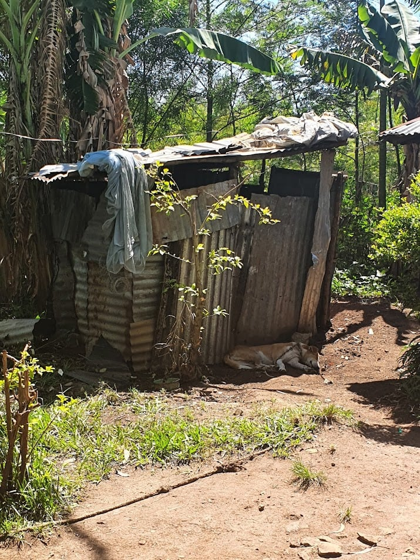
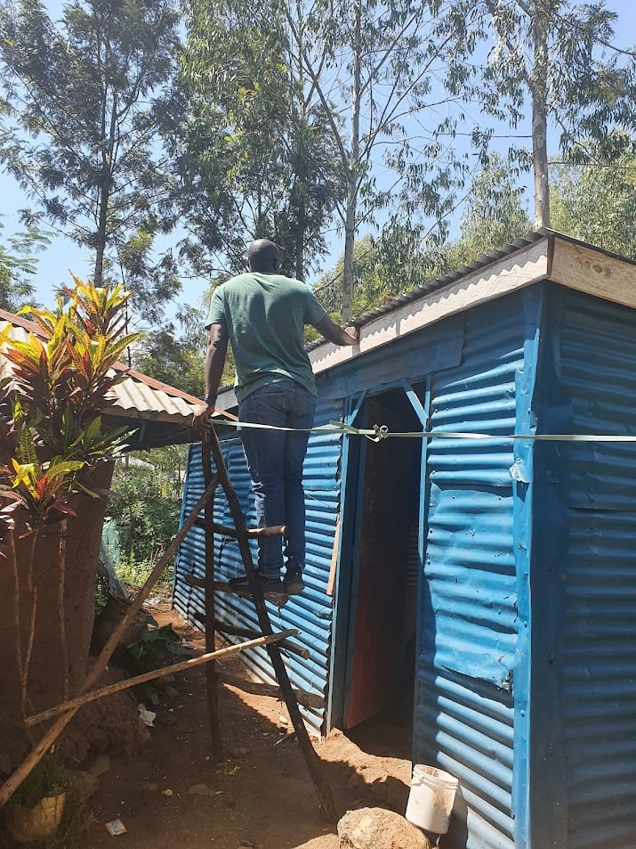
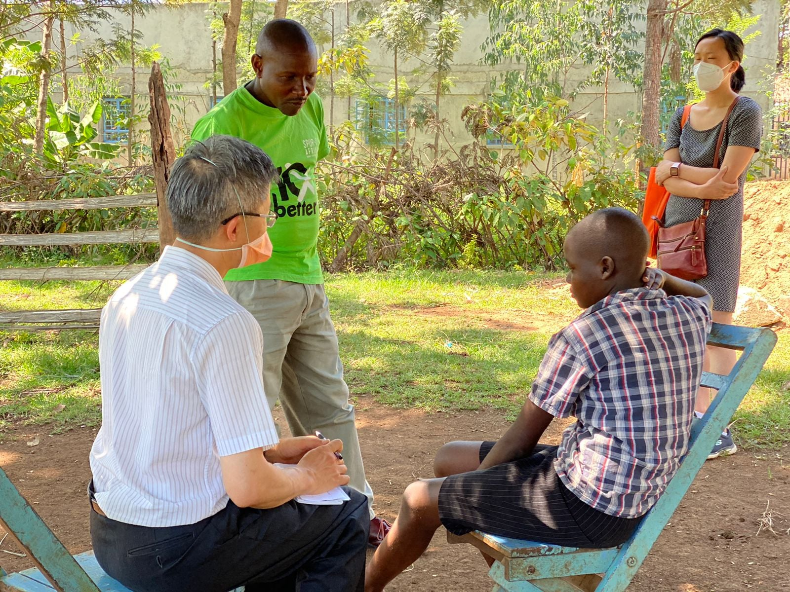

Today we visited six of the supported children at Holo, Kisumu, Kenya. As in the previous two days, it was a pleasure to be welcomed to the homes of the families of the supported children. As well as seeing the supported children, we saw and heard a little of the circumstances of the families.
Some of the families had young people living with disability, such as blindness or early childhood brain trauma. Most had adults with chronic conditions, such as musculoskeletal and respiratory (lung) conditions from a lifetime of hard manual work and smoke exposure. A mother of one of the supported children had poor vision since childhood.
There was also a wide variety of housing circumstances. Some residences had rendered walls, rammed earth floors, and nicely furnished under an intact roof. Others had deteriorating walls and roofs peppered with holes.
One young lady with disability (and goes to school) seemed to be, under her cheerful demeanour, suffering significant internal distress.
It is easy for me to despair and feel hopeless when faced by such a multitude of needs.
But where a problem is recognized and understood, there is hope. Some potentially simple life-improving measures were suggested for the child with cerebral palsy, and a local rehabilitation clinic was identified. The vision of mother with poor vision partly corrected with a ‘pinhole’, suggesting that simply providing corrective lenses (glasses) could improve her vision. Spur Afrika has already provided one of the supported children a solid and waterproof structure, safe from wild animals such as hyenas, for her to sleep in. The family of the young lady with disability and internal distress was already very accepting of the idea of seeking counselling.
Pray for wisdom as Spur Afrika identifies needs of the families of supported children and in seeking partnerships with local health clinics. Including providing education on common health topics such as menstrual health. I am thankful that support has been provided for protection from the external elements and wild animals. I am also thankful for family members who watch out for each other and are sympathetic to those who are in distress.
|  |  |
